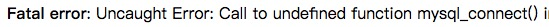

原材料
- Ubuntu16.04 服务器
- Docker
- CentOS:6 镜像
没什么卵用的介绍
有个同学的需求，需要在一个 ubuntu16.04 服务器上部署一个 PHP 的网站，当我轻车熟路一顿 apt 之后……

代码中充满了 PHP5.2 版本才有的操作，包括且不限于 session_register、preg_match、ereg、mysql_connect 系列函数，我大概看了一下代码就放弃了帮他升级的想法 —— 升级到新版 PHP 的工作量不亚于写一个新的……
好吧，看来代码是不能动了，那就装一个 PHP5.2 吧。
经过一番搜索和考虑，我决定把 PHP5.2 装在 Docker 中，以 Docker 的形式来运行网站服务。一来是服务器上之前有什么东西我不知道，服务器上已经有 PHP7 了，我不想因为环境的修改导致其他的问题；二来就是，通过搜索，我发现，ubuntu16.04 上安装 PHP5.2 还没有先例……据某个网友说，ubuntu16.04 的系统无法兼容 PHP5 的 libphp5.so ，会导致 Apache 无法解析 PHP 文件。
安装 Docker 镜像
直接 pull 一个 CentOS:6 的镜像即可，我使用了国内源的加速。
1 | docker pull registry.docker-cn.com/library/centos:6 |
安装 MySQL
项目对 MySQL 的版本没有什么要求，因此直接 yum 安装即可。
1 | yum install mysql mysql-server |
安装 Apache
Apache 的版本同样没有什么要求，直接 yum 安装。1
yum install httpd
安装 PHP5.2
准备工作
因为 yum 源里的 PHP 版本高于 5.2 ，因此需要手动下载编译 PHP 。
首先需要下载安装 PHP 必需的一些依赖。
1 | yum groupinstall "Development tools" |
安装
1 | wget http://museum.php.net/php5/php-5.2.17.tar.gz |
配置 Apache 解析 PHP
将下面的代码添加到 /etc/httpd/conf/httpd.conf 中：
1 | AddType application/x-httpd-php .php |
重启 Apache 和 MySQL
1 | /etc/init.d/mysqld restart |
此时访问服务器 IP ，已经在正常解析了。
总结
- 万恶的上古代码
- Docker 还是美滋滋啊